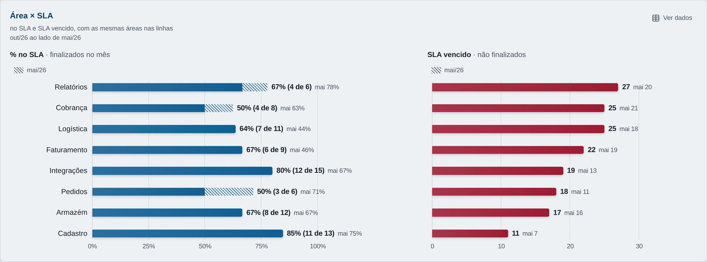
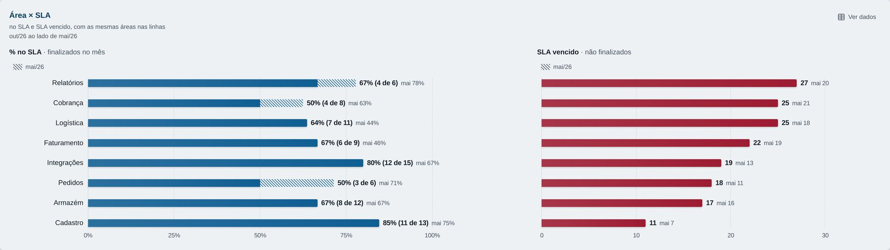
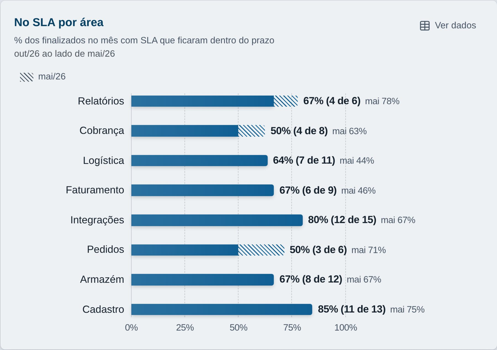
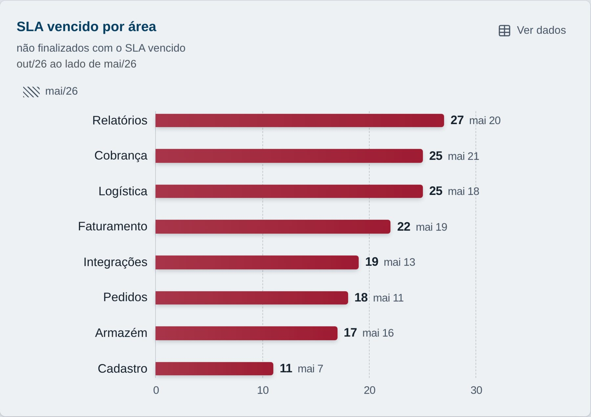
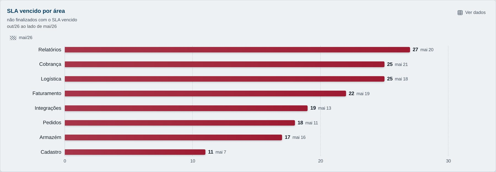

Por área, o cartão precisa mostrar duas coisas diferentes: a % no SLA (dos finalizados no mês com SLA, quantos fecharam no prazo) e o SLA vencido (não finalizados com o prazo já vencido). Hoje é uma tabela com barras. Abaixo estão três formas em gráfico, sem tabela, sem eixo duplo e sem meta. Capturas do protótipo com as planilhas fictícias: outubro/26 comparado com maio/26.
A · dois gráficos lado a lado recomendada
Recomendo a A. Cada medida fica na própria escala (0–100% e contagem), e o nome da área aparece uma vez só, então dá para ler a linha inteira de cada área. O "4 de 6" mostra quando a % vem de poucos chamados: 50% de 6 pesa menos que 85% de 13.

Em 1920 px (TV Full HD). Quando maio foi maior, a diferença aparece em listras depois da barra (Relatórios, Cobrança e Pedidos). No SLA vencido, outubro é maior em todas as áreas, então maio aparece só em cinza no rótulo.

Em 3440 px (TV ultrawide da reunião).
B · dois cartões separados
Os mesmos dois gráficos, cada um no seu cartão ("No SLA por área" e "SLA vencido por área"). Cada cartão repete os nomes das áreas, então a leitura de uma área atravessa os dois cartões.

No SLA por área.

SLA vencido por área.
C · só o SLA vencido
Um cartão com o SLA vencido por área. A % no SLA continua só no indicador do topo, sem divisão por área.

SLA vencido por área.
Como fica nas três
Áreas em ordem de SLA vencido, da maior para a menor; empate em ordem alfabética.
Área sem finalizados com SLA no mês mostra "—" na %, e a linha continua.
Ao filtrar, as barras deslizam e as linhas reordenam depois que elas param, como no resto do Painel.
Os indicadores % no SLA e SLA vencido do topo não mudam.
Ainda é protótipo: os testes e o ajuste fino vêm depois da sua escolha.
Como responder
Diga A, B ou C, com o ajuste que quiser. Se nenhuma servir, o cartão sai do Painel (spec 001, já pronta) e os indicadores do topo continuam.
Para ver ao vivo: branch proto/area-sla, rodar o app e abrir com ?areasla=A, ?areasla=B ou ?areasla=C no endereço.